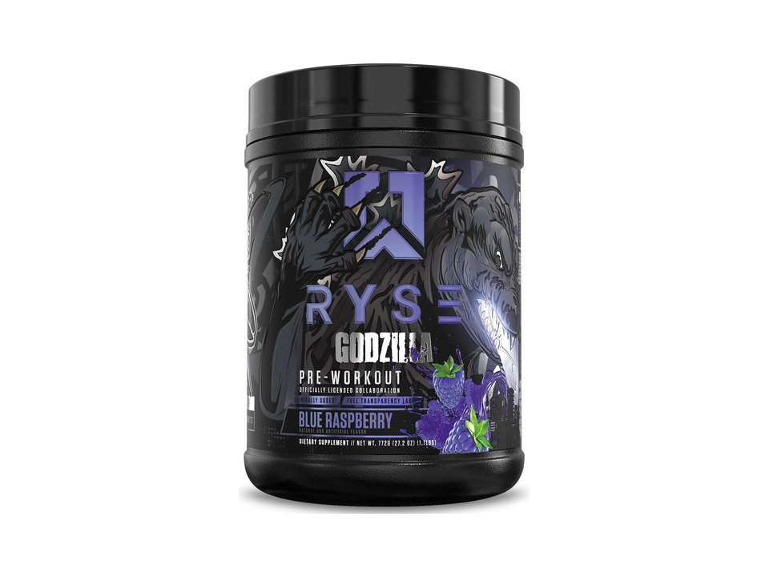

Product imagery supplied by the retailer. Packaging may vary — verify the Supplement Facts panel on the container you receive.
RYSE
Godzilla
High stimulant content · Read safety guidance
Our analysis — editorial take, not from the label
The current label reaches 400 mg of caffeine at two scoops (350 mg anhydrous plus 50 mg extended-release) with 9 g of citrulline and beta-alanine at double the studied dose; older 388 mg panels still circulate.
- Caffeine
- 400 mg
- Citrulline
- 9 g
- Beta-alanine
- 6.4 g
- Servings
- 20
Price tier: Premium · relative cost per full serving across this database
We don't list dollar prices — they change daily and go stale. Check the live price instead:
View current price Compare all 38 pre-workoutsScoop Sense doesn't collect user reviews and won't invent them. Read customer reviews on Amazon
Affiliate links — Scoop Sense may earn a commission at no additional cost to you.
Licensed candy and cereal collaboration flavors; artificially sweetened.
Label verified: July 2026 · View supplement facts image
Label data
Per full serving · 20 servings per container · from the manufacturer's panel
| Caffeine | 400 mg |
|---|---|
| L-Citrulline | 9 g |
| Beta-Alanine | 6.4 g |
| Creatine Monohydrate | 5 g |
| Proprietary blend | No |
Primary label source: RYSE — official product page · verified July 2026
Cautions
- 400 mg caffeine at the full two-scoop serving — the FDA's daily reference amount for healthy adults, before any coffee
- All figures assume two scoops; the label also prints a one-scoop column at exactly half (200 mg caffeine, 40 servings)
- 6.4 g beta-alanine — strong tingles expected
Formulated for healthy adults — not intended for anyone under 18. Performance studies use roughly 3–6 mg of caffeine per kg of body weight, which puts 400 mg at the studied amount for a 67–133 kg adult. Full health & safety notes
Product details
Where this label sits
RYSE Godzilla sits in the high stim tier of the Scoop Sense pre-workout database, which spans 0–400 mg of caffeine per serving. Every active ingredient on the panel is listed with its own dose — nothing is hidden inside a blend total. It runs 20 servings per container at the full labeled serving. Everything on this page comes from the manufacturer's supplement facts panel as of July 2026 — never from the marketing page.
Key ingredients & studied doses
- L-Citrulline · 9 g. Above the 6–8 g range used in most citrulline studies, with another 2 g of citrulline nitrate on top.
- Beta-Alanine · 6.4 g. Double the standard 3.2 g/day studied dose — strong tingles expected.
- Creatine Monohydrate · 5 g. The standard 3–5 g daily amount used in creatine research.
- Caffeine (two forms) · 400 mg. 350 mg caffeine anhydrous plus 50 mg zümXR extended-release caffeine per two scoops.
Flavors & sweetener
Licensed candy and cereal collaboration flavors; artificially sweetened.
Who it's best for
Experienced high-stimulant users only — not a sensible first pre-workout. Derived from the label figures above — not medical advice.
How we log this label
Every entry is built the same way: we read the current supplement facts panel, log each disclosed dose, compare it against the amounts used in published research, flag proprietary blends, and state the cautions plainly. The full methodology explains each step.
This label against the research
How we evaluate labelsEach bar shows the amount commonly used in published human research, and where this label's dose falls against it. Research amounts are context, not a recommendation — they are not doses, and nothing here is medical advice.
-
Citrulline9 g
At or above the studied amount0studied range 6 g–8 g10 g
Studies use about 6 g of pure L-citrulline, or 8 g of citrulline malate — which is about 5.3 g of citrulline at the usual 2:1 ratio, and closer to 4 g if the label is 1:1.
Source: Gough et al., European Journal of Applied Physiology 2021 — “The most commonly employed dose of CM is a single acute 8 g dose”
-
Beta-alanine6.4 g
At or above the studied amount0studied range 3.2 g–6.4 g7 g
Studied as a daily loading protocol of 3.2–6.4 g taken for four weeks or longer. A single serving below that range still counts toward the daily total, but one scoop is not a studied dose on its own.
Source: Rezende et al., Frontiers in Physiology 2020 — “It seems that substantial amounts of BA are required to increase MCarn, with most studies using doses of ~3.2–6.4 g·day−1, for periods ranging from 4 to 24 weeks.”
-
Creatine5 g
At or above the studied amount0studied range 3 g–5 g6 g
Maintenance dosing in the research is 3–5 g a day of monohydrate, every day, not only on training days.
Source: Kreider et al., Journal of the International Society of Sports Nutrition 2017 — “Once muscle creatine stores are fully saturated, creatine stores can generally be maintained by ingesting 3–5 g/day”
-
Caffeine400 mg
At or above the studied amount0studied range 200 mg–400 mg450 mg
Performance studies most often use 3–6 mg per kg of body weight, which works out to roughly 200–400 mg for most adults. The FDA cites 400 mg a day as an amount not generally associated with negative effects in healthy adults.
Source: Guest et al., Journal of the International Society of Sports Nutrition 2021 — “Caffeine has consistently been shown to improve exercise performance when consumed in doses of 3–6 mg/kg body mass.”
What other people say
Why we don't rate productsTwo different things, side by side: the rating the seller publishes on its own store, and what independent users write in public threads. Scoop Sense writes neither and collects no reviews of its own. Neither is evidence that a product works — they describe what people experienced and expected, not what the research shows.
On the seller's page
4.9 / 5
3,101 ratings
The brand's own storefront, read July 2026. A seller's rating is collected and moderated by the seller — treat it as a marketing figure, not an independent one.
What people actually report
RYSE Godzilla is a favorite in the boutique pre-workout community for strong focus and tingles, with a bold flavor profile that not everyone loves and mixed rankings against rival stims.
- positive Strong focus and tingles. Fans say the beta-alanine dosing gives noticeable focus and tingling, preferring it over some rival stims.
- mixed Bold, polarizing flavor. The tart, salty flavor is described as strong and enjoyable by some, though it may not suit everyone and can need extra water to dilute.
- mixed Mixed vs. rival stim pres. Some users rank it above alternatives like Gorilla Mode, while others in head-to-head comparisons still prefer the competition.
Read the threads yourself
-
“I've tried Bamf Black, Gorilla Mode, and Godzilla. I honestly prefer Godzilla over the other 2, Focus is way better and theres beta alanine in godzilla.”
r/Preworkoutsupplements thread, 2022 -
“the flavor on godzilla was pretty good a nice tart lime berry with a little saltiness to it i could see how some wouldn't like it”
r/Preworkoutsupplements thread, 2022 -
“Ive used mb godzilla & gm & by far gm is my choice of the 3”
r/Preworkoutsupplements thread, 2024
Common questions about RYSE Godzilla
How much caffeine is in RYSE Godzilla?
400 mg per full labeled serving — roughly 4.2 small cups of coffee. Within the Scoop Sense pre-workout database (0–400 mg per serving) that places it in the high stim tier. The FDA cites about 400 mg per day as an amount generally not associated with negative effects in healthy adults, and coffee, tea, and energy drinks count toward the same total.
Why does RYSE Godzilla make my skin tingle?
The 6.4 g of beta-alanine. The prickling (paresthesia) in the face, neck, and hands is generally considered harmless, is dose-dependent, and fades on its own — typically within about an hour. Most beta-alanine studies use 3.2 g per day.
Does RYSE Godzilla disclose every dose?
Yes — the label lists an individual amount for each ingredient, with no proprietary blends. That is what the "label fully disclosed" tag on Scoop Sense means, and it is what lets each dose be compared against the amounts used in published research.
Do the numbers for RYSE Godzilla assume one scoop or two?
All figures on this page are per full labeled serving. 400 mg caffeine at the full two-scoop serving — the FDA's daily reference amount for healthy adults, before any coffee.